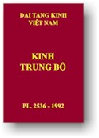

BuddhaSasana
Home Page
This document is written in Vietnamese, with Unicode
Times font
|  |
Ðại Tạng Kinh Việt Nam
Trung
Bộ Kinh
|
[các bài kinh có ký hiệu (a) là các bài song ngữ Việt-Anh]
[Tập I (1-50)] [Tập II (51-100)] [Tập III (101-152)] Tập I (Kinh số 1-50)
(1) Kinh Pháp môn căn bản (a)
(2) Kinh Tất cả lậu hoặc (a)
(3) Kinh Thừa tự Pháp
(4) Kinh Sợ hãi và khiếp đảm (a)
(5) Kinh Không uế nhiễm
(6) Kinh Ước nguyện
(7) Kinh Ví dụ tấm vải (a)
(8) Kinh Ðoạn giảm (a)
(9) Kinh Chánh tri kiến (a)
(10) Kinh Niệm xứ (a)
(11) Tiểu kinh Sư tử hống (a)
(12) Ðại kinh Sư tử hống (a)
(13) Ðại kinh Khổ uẩn (a)
(14) Tiểu kinh Khổ uẩn
(15) Kinh Tư lượng
(16) Kinh Tâm hoang vu
(17) Kinh Khu rừng
(18) Kinh Mật hoàn (a)
(19) Kinh Song tầm (a)
(20) Kinh An trú tầm (a)
(21) Kinh Ví dụ cái cưa (a)
(22) Kinh Ví dụ con rắn (a)
(23) Kinh Gò mối
(24) Kinh Trạm xe (a)
(25) Kinh Bẫy mồi(26) Kinh Thánh cầu
(27) Tiểu kinh Ví dụ dấu chân voi
(28) Ðại kinh Ví dụ dấu chân voi
(29) Ðại kinh Ví dụ lõi cây
(30) Tiểu kinh Ví dụ lõi cây
(31) Tiểu kinh Khu rừng sừng bò
(32) Ðại kinh Khu rừng sừng bò
(33) Ðại kinh Người chăn bò
(34) Tiểu kinh Người chăn bò
(35) Tiểu kinh Saccaka
(36) Ðại kinh Saccaka (a)
(37) Tiểu kinh Ðoạn tận ái
(38) Ðại kinh Ðoạn tận ái
(39) Ðại kinh Xóm ngựa
(40) Tiểu kinh Xóm ngựa
(41) Kinh Saleyyaka (a)
(42) Kinh Veranjaka
(43) Ðại kinh Phương quảng
(44) Tiểu kinh Phương quảng (a)
(45) Tiểu kinh Pháp hành (a)
(46) Ðại kinh Pháp hành
(47) Kinh Tư sát
(48) Kinh Kosampiya
(49) Kinh Phạm thiên cầu thỉnh
(50) Kinh Hàng maTập II (Kinh số 51-100)
(51) Kinh Kandaraka
(52) Kinh Bát thành
(53) Kinh Hữu học
(54) Kinh Potaliya
(55) Kinh Jivaka
(56) Kinh Ưu-ba-ly
(57) Kinh Hạnh con chó (a)
(58) Kinh Vương tử Vô-úy (a)
(59) Kinh Nhiều cảm thọ
(60) Kinh Không gì chuyển hướng
(61) Kinh Giáo giới La-hầu-la ở Am-bà-la (a)
(62) Ðại kinh Giáo giới La-hầu-la
(63) Tiểu kinh Malunkyaputta (a)
(64) Ðại kinh Malunkyaputta
(65) Kinh Bhaddali
(66) Kinh Ví dụ con chim cáy
(67) Kinh Catuma
(68) Kinh Nalakapana
(69) Kinh Gulissani
(70) Kinh Kitagiri
(71) Kinh Vacchagotta về tam minh
(72) Kinh Vacchagotta về lửa (a)
(73) Ðại kinh Vacchagotta
(74) Kinh Trường Trảo
(75) Kinh Magandiya (a)(76) Kinh Sandaka
(77) Ðại kinh Sakuludayi
(78) Kinh Samanamandika
(79) Tiểu kinh Sakuludayi
(80) Kinh Vekhanassa
(81) Kinh Ghatikara
(82) Kinh Ratthapala (a)
(83) Kinh Makhadeva
(84) Kinh Madhura
(85) Kinh Vương tử Bồ-đề
(86) Kinh Angulimala
(87) Kinh Ái sanh (a)
(88) Kinh Bahitika
(89) Kinh Pháp trang nghiêm
(90) Kinh Kannakatthala
(91) Kinh Brahmayu
(92) Kinh Sela
(93) Kinh Assalayana
(94) Kinh Ghotamukha
(95) Kinh Canki
(96) Kinh Esukari
(97) Kinh Dhananjani
(98) Kinh Vasettha
(99) Kinh Subha
(100) Kinh SangaravaTập III (Kinh số 101-152)
(101) Kinh Devadaha
(102) Kinh Năm và Ba
(103) Kinh Nghĩ như thế nào?
(104) Kinh Làng Sama
(105) Kinh Thiện tinh (a)
(106) Kinh Bất động lợi ích
(107) Kinh Ganaka Moggalana (a)
(108) Kinh Gopaka Moggalana (a)
(109) Ðại kinh Mãn nguyệt
(110) Tiểu kinh Mãn nguyệt
(111) Kinh Bất đoạn
(112) Kinh Sáu thanh tịnh
(113) Kinh Chân nhân
(114) Kinh Nên hành trì, không nên hành trì
(115) Kinh Ða giới
(116) Kinh Thôn tiên
(117) Ðại kinh Bốn mươi (a)
(118) Kinh Nhập tức Xuất tức niệm (a)
(119) Kinh Thân hành niệm (a)
(120) Kinh Hành sanh
(121) Kinh Tiểu không (a)
(122) Kinh Ðại không
(123) Kinh Hy hữu vị tằng hữu pháp
(124) Kinh Bạc-câu-la
(125) Kinh Ðiều ngự địa (a)
(126) Kinh Phù-di (a)(a) Việt-Anh
(127) Kinh A-na-luật
(128) Kinh Tùy phiền não
(129) Kinh Hiền ngu
(130) Kinh Thiên sứ
(131) Kinh Nhất dạ hiền giả (a)
(132) Kinh A-nan nhất dạ hiền giả
(133) Kinh Ðại Ca-chiên-diên nhất dạ hiền giả
(134) Kinh Lomasakangiya nhất dạ hiền giả
(135) Tiểu kinh Nghiệp phân biệt (a)
(136) Ðại kinh Nghiệp phân biệt (a)
(137) Kinh Phân biệt sáu xứ
(138) Kinh Tổng thuyết và biệt thuyết
(139) Kinh Vô tránh phân biệt
(140) Kinh Giới phân biệt (a)
(141) Kinh Phân biệt về sự thật
(142) Kinh Phân biệt cúng dường
(143) Kinh Giáo giới Cấp Cô Ðộc
(144) Kinh Giáo giới Channa
(145) Kinh Giáo giới Phú-lâu-na
(146) Kinh Giáo giới Nandaka
(147) Tiểu kinh giáo giới La-hầu-la
(148) Kinh Sáu sáu (a)
(149) Ðại kinh Sáu xứ (a)
(150) Kinh Nói cho dân chúng Nagaravinda
(151) Kinh Khất thực thanh tịnh
(152) Kinh Căn tu tập (a)* Bình Anson hiệu đính, dựa theo bản Anh ngữ "The Middle Length Discourses of the Buddha", Tỳ kheo Nanamoli và Tỳ kheo Bodhi dịch, 1995.
* Chân thành cám ơn anh HDC và nhóm Phật tử VH đã có thiện tâm gửi tặng bản đánh máy vi tính (10-1999).
* Chân thành cám ơn anh Trương Đình Hiếu & anh Nguyễn Đức Quý đã giúp dò soát toàn bộ bản vi tính.(*) Trích giảng Trung Bộ Kinh: các bài trích giới thiệu và trích giảng kinh. (*) Xin xem thêm bản dịch Anh ngữ, toàn bộ 152 bài kinh, của Ni sư Upalavanna.
Hòa thượng Thích Minh Châu,
ảnh chụp tháng 10/1999
Last updated: 15-07-2004